Установка и настройка RGB подсветки¶
Данный материал является копией ресурса: https://www.drive2.ru/l/553166225153198981/
Что включает в себя RGB подсветка
- Меняющая цвет подсветка декора в дверях
- Меняющая цвет подсветка ног
- Меняющая цвет подсветка ниши центральной консоли
- Монохромная фоновая подсветка плафона освещения салона
- Регулировка цвета и яркости через штатное меню в ГУ
- Привязка цветовых профилей к профилям движения
- Привязка цветов к водителю (или ключу)
- Подсветка карманов дверей (номера плафонов 8W0919390A, B, C, D)
Файлы и ссылки на инструкции¶
Требования предъявляются к комплектации автомобиля:¶
-
Блок бортовой сети BCM версии High 5Q0937084CG/CQ/DD/DH.
Версия High устанавливалась в России только на автомобили с подсветкой панорамной крыши или на Scoda Octavia со штатной цветной подсветкой.
На любых других комплектациях авто НЕОБХОДИМА замена ВСМ. Версии 5Q0937084CF/CP/DC многоцветную подсветку не поддерживают.
Также полностью весь пакет нельзя внедрить на любом ВСМ 5Q0937086 Passat B8, Kodiaq, на этом BCM не будет работать многоцветная подсветка ног. -
Монохромная подсветка дверных карт, если ее нет, необходима замена декора дверей (устанавливать дверные блоки в задние двери необязательно)

-
Для реализации функций привязки цветов к профилю движения важно убедиться, что гейтвей (J533 или 19 блок), имеет версию софта не ниже 4344 или 5344 и имеет индекс Q и выше, в противном случае, ищем тех кто умеет прошивать и заливать параметрию
Теория¶
- Все цветные диоды в машине управляются шиной LIN, поэтому проводов на диод идет 3 +, -, Lin-шина
- LIN RGB в ВСМ – пин 29 в разъеме С
- Потолочные плафоны атмосферной подсветки аналогично управляются по LIN
- LIN потолочных плафонов в ВСМ – пин 15 в разъеме А
- Существует несколько каналов атмосферной подсветки, которые мы можем регулировать с ГУ: двери, ноги, передняя панель, центральная консоль, потолочный плафон, подсветка панорамы.
На каждой из машин на платформе MQB есть свои особенности и регулировка некоторых каналов может отсутствовать:
- Tiguan умеет все
- Гольф не умеет отображать и регулировать потолочный плафон
- Октавия не умеет отображать и регулировать центральную консоль

Схема¶
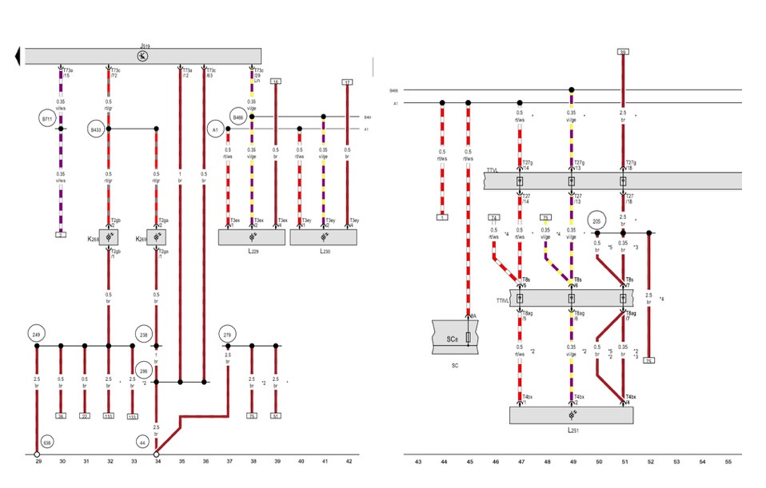
J519 – BCM
L2** — диоды
SC8 – предохранитель
Инструмент¶
- Набор лопаток для разбора салона
- Дрель со сверлом по металлу на 4,5-5 мм
- Dremel или что-то для выпиливания отверстия в нише центральной консоли
- Обжимку для пинов
- Острый нож для подготовки диодов к установке
Запчасти¶
Запчасти для проводки, необходимой для установки RGB диодов в двери, ноги центральную консоль:
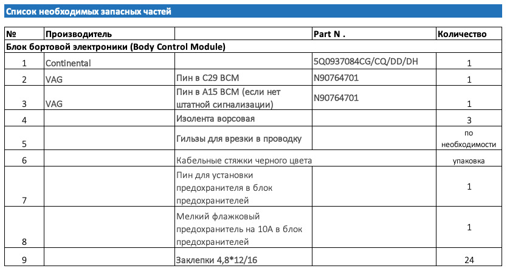
 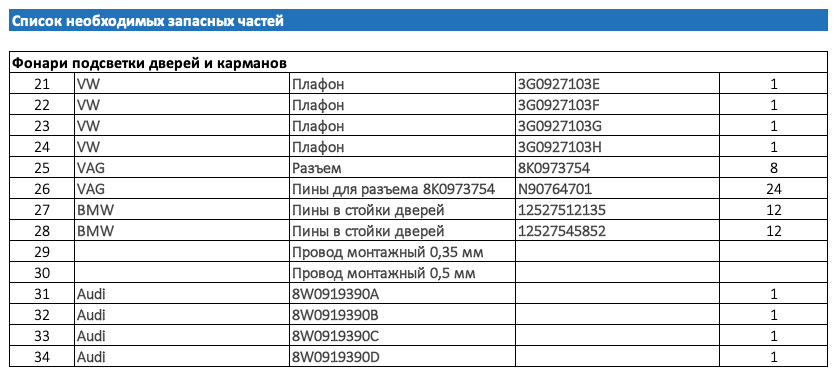
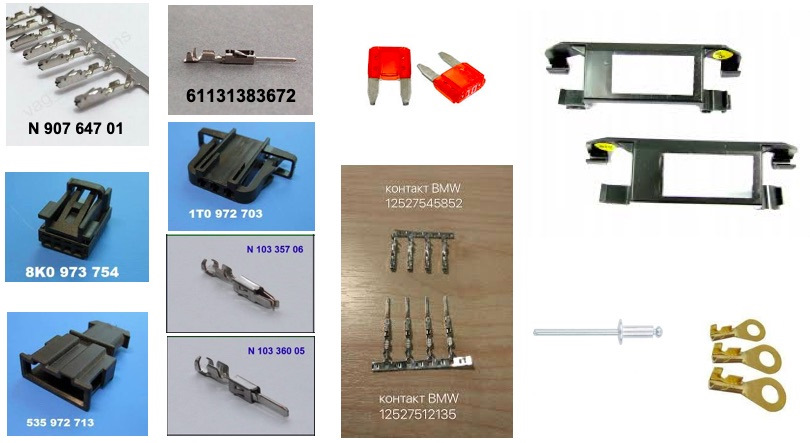
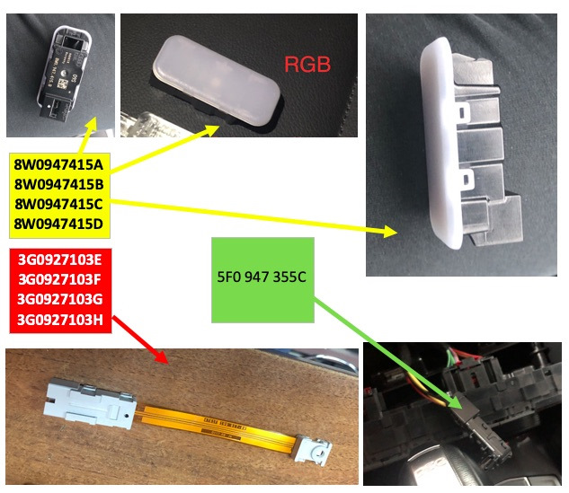
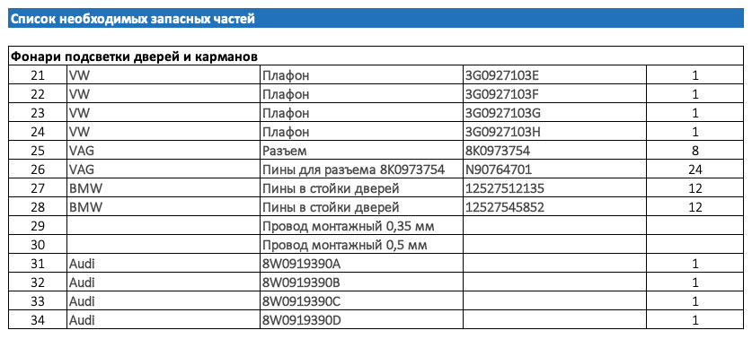
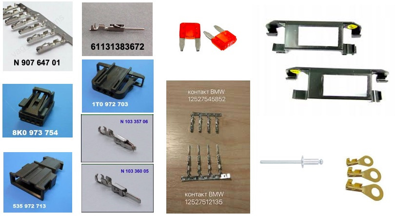
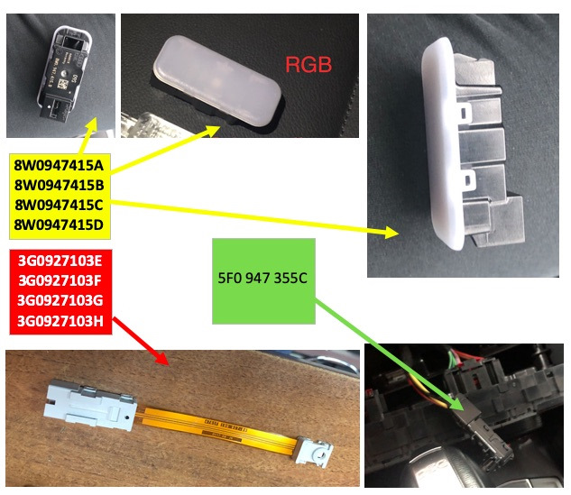
Дальше по-желанию, можно обойтись и без этого. Элементы нужны для того, чтобы сделать «разрыв» проводки между дверью и обшивкой (на передних дверях) и обусловлено логикой укладки проводки в них — часть проводки идет по обшивке, часть по двери и имея разъем проще все разбирать при необходимости. 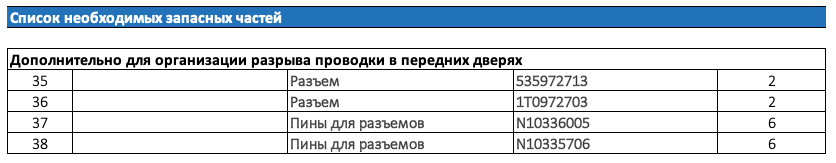
Потолочный плафон
 По верхним плафонам для машин с панорамой:
По верхним плафонам для машин с панорамой:
Передний плафон — 3G0947105E
Задний 1 — 3G9947292A
Задний 2 — 3G9947291A
Прокладка всей необходимой проводки¶
- Если комплектацией вашего авто не предусмотрено наличие в блоке предохранителей 8 предохранителя (SC8), то его необходимо установить, все питание RGB подсветки запитано на этот предохранитель.
- Cнимаем клемму с аккумулятора.
- Снимаем обшивки с дверей, внутренние пороги в салоне, нижние части стоек дверей в салоне, снимаем передние сидения для удобства.
Двери¶
- Отсверливаем динамики (высверливаем клепки), размыкаем дверные разъемы и демонтируем дверные жгуты проводки. ВНИМАНИЕ – когда разматываем штатную изоленту замечаем все заводские размеры установки уплотнителей, длину намотки изоленты и тд. Если потом при сборке ошибетесь, есть шанс ближайшей зимой начать ремонтировать проводку в гибкой части соединения.
- В дверные жгуты проводки вплетаем 3 провода: 2 сечением 0,35 мм, 1 сечением 0,5 мм.
- Со стороны дверного разъема пинуем провода соответствующими пинами (12527545852 для разъемов в дверях).
- Дотягиваем провода до места установки диодов на обшивках, предусмотрев на передних дверях разрыв проводки между дверью и обшивкой (необходимый набор деталей написал выше).
- Пинуем новый разъем диода пинами N90764701: Распиновка разъемов диодов и сечение проводов: 1 — плюс 0,5 мм, 2 – LIN 0,35 мм, 4 — масса 0,35 мм.
- Предварительно все прозвонив и проверив на качество обжатия устанавливаем все на места, заклепываем динамики.
- Запиновываем 3 провода в разъемы расположенные на стойках дверей, провод LIN-шины тянем к ВСМ, питание «плюс» к установленному ранее предохранителю, массу обжимаем кольцом и крепим на ближайший болт массы, пины 12527512135.
- Пока салон не собираем, переходим к проводке RGB подсветки ног.
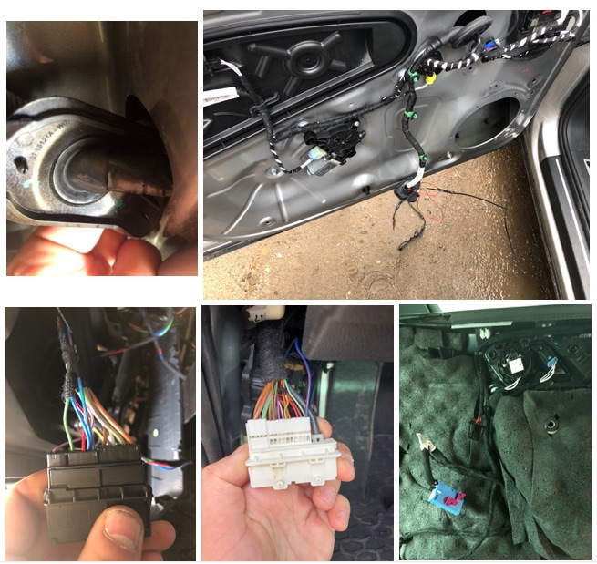
Сидения¶
- Размыкаем красный разъем сидения, разъем подушек безопасности и разбираем разъем со стороны сидения.
- Прокладываем по штатной проводке три провода 2 сечением 0,35 мм, 1 сечением 0,5 мм от разъема сидения к месту установки диода.
- Запиновываем разъем диода пинами N90764701: Распиновка разъемов диодов и сечение проводов: 1 — плюс 0,5 мм, 2 – LIN 0,35 мм, 4 — масса 0,35 мм.
- Запиновываем второй конец проводов пинами приобретенными для разъема сидения.
- Снимаем с фиксатора ответную часть разъема сидения и запиновываем в нее 3 провода соответствующими пинами — 2 сечением 0,35 мм, 1 сечением 0,5 мм, провод “плюс” тянем к ранее установленному предохранителю, LIN – к ВСМ, массу обжимаем колечком и накручиваем на ближайший болт массы.
- Устанавливаем кронштейны 4M08815479B9 к пружинам под сидениями и в них фонари подсветки ног.
- Собираем все в обратном порядке.

Консоль¶
- Снимаем накладку климата.
- Снимаем климат.
- Снимаем боковину тоннеля.
- Жгутуем провода 2 шт сечением 0,35 мм, 1 сечением 0,5 мм.
- Запиновываем разъем диода.
- Протягиваем провода “плюс” к установленному предохранителю, LIN – к ВСМ, массу обжимаем кольцом и крепим к ближайшему болту массы или берем болт с гайкой и прикручиваем к железному усилителю консоли, масса на нем хорошая.
- Переходим к подключению всего этого дела в ВСМ.
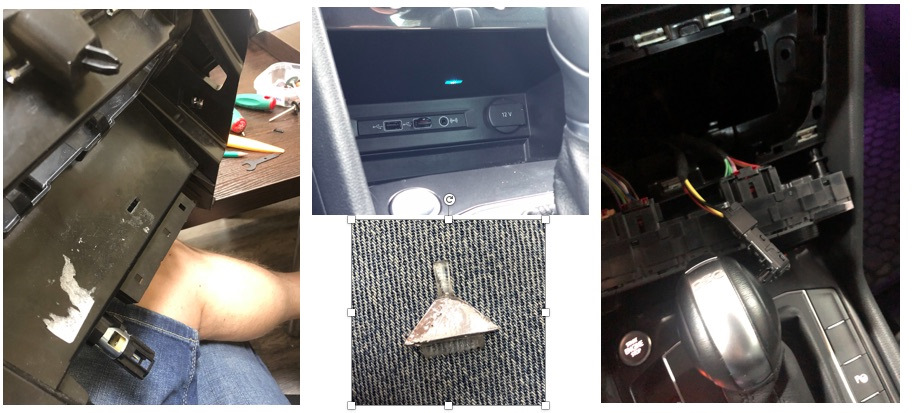
Передние фонари подсветки ног¶
- Жгутуем провода 2 шт сечением 0,35 мм, 1 сечением 0,5 мм.
- Запиновываем разъем диода.
- Протягиваем провода “плюс” к установленному предохранителю, LIN – к ВСМ, массу обжимаем кольцом и крепим к ближайшему болту массы.
- Если с завода отсутствуют штатные крепления фонарей, то покупаем их и устанавливаем на место.
- Устанавливаем плафон ног водителя в штатное место над педалью газа, подключаем разъем.
- Устанавливаем плафон ног пассажира в штатное место над правой ногой пассажира.
Подключение LIN шины в ВСМ¶
- Снимаем разъем С с ВСМ (ближний к нам разъем), отгибая белую скобу, одновременно нажимая блокиратор, возможно придется попотеть, место неудобное.
- Разрезаем стяжку которая держит наружный корпус.
- Отжимаем усики и вынимаем 2 внутренние части разъема.
- Находим гнездо по 29 пин.
- Обжимаем провод необходимой длины пином N90764701.
- Вставляем обжатый провод в гнездо 29 пина.
- Удобно жгутуем провод и соединяем его со всеми ранее протянутыми LIN-проводами (4 от дверей, 4 от сидения, 1 от консоли) по принципу «звезды», у VAG существуют специальные коннекторы для этого, но я так сильно не морочился и скрутил все и обжал гильзой.
- Изолируем все и укладываем.
- Собираем все в обратном порядке, тут и понадобится кабельная стяжка.
- LIN протянут.
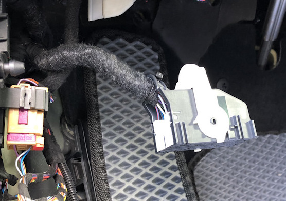
Подключение к предохранителю¶
Аналогично предыдущему подключению LIN собираем все провода “плюс” в кучу и подключаем к проводу, запитанному от предохранителя, который ранее установили.
Установка диодов в двери¶
- Механически дорабатываем диоды по образцу штатного монохромного, форма и размер посадочных мест диода пассата и тигуана не совпадают, передние и задние диоды имеют разные замки, при установке диодов на место нужно это учесть.
- Устанавливаем их на штатные места в полоску подсветки.
- Фиксируем шлейфы так, чтобы при установке обшивки они не повредились.
- Собираем обшивки дверей на место.
Установка диода в консоль¶
- Лучше всего снимаем консоль полностью по инструкции из ELSA
- Пилим дремелем окошко под световод
- Изготавливаем световод
- Вставляем световод в консоль, фиксируем
- Надеваем на световод диод и подключаем разъем
- Проводка для потолочного плафона с атмосферной подсветкой
Установка атмосферных плафонов в потолок¶
- Поддеваем лопаткой стеклянную часть и отсоединяем ее от разъемов.
- Вставляем лопатку в пазы на самом плафоне и вынимаем часть с лампочкой.
- Поддеваем лопаткой и снимаем накладку кнопок Глонасс.
- Откручиваем 4 самореза Torx по периметру.
- Снимаем переднюю накладку плафона вместе с накладкой-колокольчиком к зеркалу.
- Отсоединяем разъемы и снимаем раму.
- Перепиновываем разъемы (используя пины N90764701):

Кодирование¶
Блок 09 → Адаптация
> Interior_light_lamp_configuration
>> Ambiente_Applikationsleisten_in_Tuertafel → установл. (полоски в двери)
>> Ambiente_Lautsprecher → не установл.
>> Ambiente_Applikationsleisten_in_Instrumententafel → не установл.
>> Cockpitbeleuchtung → не установл.
>> Mittelkonsolenbeleuchtung → установл. (фонарик в центральной консоли)
>> Dachbeleuchtung → установл. (потолочный плафон Ambient+)
>> Panoramaschiebedachbeleuchtung → не установл.
>> Fussraumbeleuchtung → установл. (подсветка ног)
>> LIN-Dachkonsole lokal aktivierbar → акт. (авктивирует управление потолочным плафоном по LIN)
>> Ambientemenue mit globalem aus → акт. (Общая регулировка атмосферной подсветки)
>> Ambientemenue mit alle Zonen → акт. (Регулировка зон по отдельности)
>> Ambient_Farbliste_HMI → акт. (активация показа шкалы выбора цвета)
>> Ambience_light_colorlist_default → 1
→ Применить
Блок 09 → Адаптация
> Interior_light_2nd_generation
>> Aufloesung Dimmzeit → 0.8
>> weicher Farbwechsel → акт.
>> Tuertafelbeleuchtung mehrfarbig → акт. (полоска в дверях цветная)
>> Instrumententafelbeleuchtung mehrfarbig → не акт.
>> Cockpitbeleuchtung mehrfarbig → не акт.
>> Lautsprecherbeleuchtung mehrfarbig → не акт.
>> Mittelkonsolenbeleuchtung mehrfarbig → акт. (диод в центральной консоли цветной)
>> Dachbeleuchtung mehrfarbig → не акт. (фонарь в потолке одноцветный)
>> Panoramaschiebedachbeleuchtung mehrfarbig → не акт.
>> Panoramaschiebedachbeleuchtung bei geoeffnetem Rollo deaktivieren → не акт.
>> BAP Farbwert Farbe 1 → 1
>> BAP Farbwert Farbe 2 → 4
>> BAP Farbwert Farbe 3 → 5
>> Defaultwert Ambienteprofil Mittelkonsole → 80 (яркость плафонов по умолчанию)
>> Defaultwert Ambienteprofil Dach → 80 (яркость плафонов по умолчанию)
>> Defaultwert Ambienteprofil Farbe → 8
>> Defaultwert Ambienteprofil Fussraum → 80 (яркость плафонов по умолчанию)
>> Defaultwert Ambienteprofil Tuer → 80 (яркость плафонов по умолчанию)
>> Ambiente_Farbliste_HMI_mit_Farbtransformation → акт. (включает раздельное назначение цветов на экране и на диодах для подбора соответствия экранного цвета цвету, который в состоянии отобразить диод)
>> Helligkeit_Tuertafelbeleuchtung_nicht_berechnen → не акт. (выключаем запрет на регулировку)
>> Helligkeit Instrumententafelbeleuchtung nicht berechnen → акт.
>> Helligkeit Cockpitbeleuchtung nicht berechnen → акт.
>> Helligkeit Lautsprecherbeleuchtung nicht berechnen → акт.
>> Helligkeit Mittelkonsolenbeleuchtung nicht berechnen → не акт. (выключаем запрет на регулировку)
>> Helligkeit Dachbeleuchtung nicht berechnen → не акт. (выключаем запрет на регулировку)
>> Helligkeit Panoramaschiebedachbeleuchtung nicht berechnen → акт.
>> Farbausgabe Tuertafelbeleuchtung nicht berechnen → не акт. (выключаем запрет на регулировку)
>> Farbausgabe Instrumententafelbeleuchtung nicht berechnen → акт.
>> Farbausgabe Cockpitbeleuchtung nicht berechnen → акт.
>> Farbausgabe Lautsprecherbeleuchtung nicht berechnen → акт.
>> Farbausgabe Mittelkonsolenbeleuchtung nicht berechnen → не акт.(выключаем запрет на регулировку)
>> Farbausgabe Dachbeleuchtung nicht berechnen → не акт.(выключаем запрет на регулировку)
>> Farbausgabe Panoramaschiebedachbeleuchtung nicht berechnen → акт.
>> LIN-Dachkonsole mit Flaechenlicht → установл. (фоновая подсветка потолочного фонаря)
>> Ambiente_Farbwahl_FPA_waehlbare_Kopplung → акт. (привязка профиля движения)
>> Ambiente_Fahrprofil_Individual → 1
>> Ambiente_Farbwahl_FPA_waehlbare_Kopplung_Status_hmi_default → сопряжены (привязка профиля движения)
→ Применить
Яркость и плавность регулировки каналов
Блок 09 → Адаптация
> Interior_light_parameter
>> p_adaption_kundenwunsch_tuer → 0.67 (линейность регулировки)
>> p_helligkeit_entriegelt_tueren → 100
>> p_helligkeit_max_tueren → 100
>> p_helligkeit_HD_auf_zuendung_ein_tueren → 126
>> p_helligkeit_HD_auf_zuendung_aus_tueren → 127
>> p_helligkeit_dieseTuer_auf_zuendung_ein_tueren → 100
>> p_helligkeit_andereTuer_auf_zuendung_ein_tueren → 100
>> p_helligkeit_Fzg_geschlossen_zuendung_ein_tueren → 126
>> p_helligkeit_dieseTuer_auf_zuendung_aus_tueren → 100
>> p_helligkeit_andereTuer_auf_zuendung_aus_tueren → 100
>> p_helligkeit_einausstieg_tueren → 100
>> p_helligkeit_Fzg_geschlossen_zuendung_aus_tueren → 127
>> p_helligkeit_Tueren_geschlossen_HD_auf_zuendung_aus_tueren → 100
>> p_helligkeit_Tueren_geschlossen_HD_zu_zuendung_aus_tueren → 100
>> p_helligkeit_Tueren_geschlossen_schluessel_ab_tueren → 100
>> p_helligkeit_Fzg_geschlossen_schluessel_ab_tueren → 100
>> p_adaption_kundenwunsch_fussraum → 0.67
>> p_helligkeit_entriegelt_fussraum → 100
>> p_helligkeit_max_fussraum → 100
>> p_helligkeit_HD_auf_zuendung_ein_fussraum → 126
>> p_helligkeit_HD_auf_zuendung_aus_fussraum → 127
>> p_helligkeit_dieseTuer_auf_zuendung_ein_fussraum → 100
>> p_helligkeit_andereTuer_auf_zuendung_ein_fussraum → 100
>> p_helligkeit_Fzg_geschlossen_zuendung_ein_fussraum → 126
>> p_helligkeit_dieseTuer_auf_zuendung_aus_fussraum → 100
>> p_helligkeit_andereTuer_auf_zuendung_aus_fussraum → 100
>> p_helligkeit_einausstieg_fussraum → 100
>> p_helligkeit_Fzg_geschlossen_zuendung_aus_fussraum → 127
>> p_helligkeit_Tueren_geschlossen_HD_auf_zuendung_aus_fussraum → 100
>> p_helligkeit_Tueren_geschlossen_HD_zu_zuendung_aus_fussraum → 100
>> p_helligkeit_Tueren_geschlossen_schluessel_ab_fussraum → 100
>> p_helligkeit_Fzg_geschlossen_schluessel_ab_fussraum → 100
>> p_adaption_kundenwunsch_miko → 0.67
>> p_helligkeit_entriegelt_miko → 100
>> p_helligkeit_max_miko → 100
>> p_helligkeit_HD_auf_zuendung_ein_miko → 126
>> p_helligkeit_HD_auf_zuendung_aus_miko → 127
>> p_helligkeit_dieseTuer_auf_zuendung_ein_miko → 100
>> p_helligkeit_andereTuer_auf_zuendung_ein_miko → 100
>> p_helligkeit_Fzg_geschlossen_zuendung_ein_miko → 126
>> p_helligkeit_dieseTuer_auf_zuendung_aus_miko → 100
>> p_helligkeit_andereTuer_auf_zuendung_aus_miko → 100
>> p_helligkeit_einausstieg_miko → 100
>> p_helligkeit_Fzg_geschlossen_zuendung_aus_miko → 100
>> p_helligkeit_Tueren_geschlossen_HD_auf_zuendung_aus_miko → 100
>> p_helligkeit_Tueren_geschlossen_HD_zu_zuendung_aus_miko → 100
>> p_helligkeit_Tueren_geschlossen_schluessel_ab_miko → 100
>> p_helligkeit_Fzg_geschlossen_schluessel_ab_miko → 100
>> p_adaption_kundenwunsch_dach → 1
>> p_helligkeit_entriegelt_dach → 100
>> p_helligkeit_max_dach → 100
>> p_helligkeit_HD_auf_zuendung_ein_dach → 100
>> p_helligkeit_HD_auf_zuendung_aus_dach → 100
>> p_helligkeit_dieseTuer_auf_zuendung_ein_dach → 100
>> p_helligkeit_andereTuer_auf_zuendung_ein_dach → 100
>> p_helligkeit_Fzg_geschlossen_zuendung_ein_dach → 126
>> p_helligkeit_dieseTuer_auf_zuendung_aus_dach → 100
>> p_helligkeit_andereTuer_auf_zuendung_aus_dach → 100
>> p_helligkeit_einausstieg_dach → 100
>> p_helligkeit_Fzg_geschlossen_zuendung_aus_dach → 100
>> p_helligkeit_Tueren_geschlossen_HD_auf_zuendung_aus_dach → 100
>> p_helligkeit_Tueren_geschlossen_HD_zu_zuendung_aus_dach → 100
>> p_helligkeit_Tueren_geschlossen_schluessel_ab_dach → 100
>> p_helligkeit_Fzg_geschlossen_schluessel_ab_dach → 100
→ Применить
Отображение солнышек и графики на экране ГУ
Блок 09 → Адаптация
> Освещение салона, параметры / Interior_light_parameter
>> p_ambienteumfang_mehrfarbig_HMI → 100
>> p_ambienteumfang_mehrfarbig_HMI_2 → 100
>> p_ambienteumfang_mehrfarbig_HMI_3 → 0
>> p_ambienteumfang_mehrfarbig_HMI_4 → 0
→ Применить
Отображение солнышек и монохромной графики на экране ГУ
Блок 09 → Адаптация
> Освещение салона, параметры / Interior_light_parameter
>> p_ambientelicht_verbauinformation_HMI → 1
>> p_ambientelicht_verbauinformation_HMI_2 → 10001
>> p_ambientelicht_verbauinformation_HMI_3 → 10
>> p_ambientelicht_verbauinformation_HMI_4 → 0
→ Применить
Скорость смены цвета мс
Блок 09 → Адаптация
> Освещение салона, параметры / Interior_light_parameter
>> p_t_HMI_verzoegerung_helligkeitswerte → 200
→ Применить
Прописывание физических диодов
Блок 09 → Адаптация
> ambient_lighting_lin_slaves_modules
>> pa_einzeladresse_slave_1 → 1
>> pa_verbauinfo_slave_1 → установл.
>> pa_fehlerort_slave_1 → 0
>> pa_einzeladresse_slave_2 → 2
>> pa_verbauinfo_slave_2 → установл.
>> pa_fehlerort_slave_2 → 0
>> pa_einzeladresse_slave_3 → 3
>> pa_verbauinfo_slave_3 → установл.
>> pa_fehlerort_slave_3 → 0
>> pa_einzeladresse_slave_4 → 4
>> pa_verbauinfo_slave_4 → установл.
>> pa_fehlerort_slave_4 → 0
>> pa_einzeladresse_slave_5 → 0
>> pa_verbauinfo_slave_5 → не установл.
>> pa_fehlerort_slave_5 → 0
>> pa_einzeladresse_slave_6 → 0
>> pa_verbauinfo_slave_6 → установл.
>> pa_fehlerort_slave_6 → 0
>> pa_einzeladresse_slave_7 → 0
>> pa_verbauinfo_slave_7 → не установл.
>> pa_fehlerort_slave_7 → 0
>> pa_einzeladresse_slave_8 → 0
>> pa_verbauinfo_slave8 → не установл.
>> pa_fehlerort_slave8 → 0
>> pa_einzeladresse_slave_9 → 0
>> pa_verbauinfo_slave_9 → не установл.
>> pa_fehlerort_slave_9 → 0
>> pa_einzeladresse_slave_10 → 0
>> pa_verbauinfo_slave_10 → не установл.
>> pa_fehlerort_slave_10 → 0
>> pa_einzeladresse_slave_11 → 0
>> pa_verbauinfo_slave_11 → не установл.
>> pa_fehlerort_slave_11 → 0
>> pa_einzeladresse_slave_:12 → 0
>> pa_verbauinfo_slave_12 → не установл.
>> pa_fehlerort_slave_12 → 0
>> pa_einzeladresse_slave_13 → 0
>> pa_verbauinfo_slave_13 → не установл.
>> pa_fehlerort_slave_13 → 0
>> pa_einzeladresse_slave_14 → 0
>> pa_verbauinfo_slave_14 → не установл.
>> pa_fehlerort_slave_14 → 0
>> pa_einzeladresse_slave_15 → 0
>> pa_verbauinfo_slave_15 → не установл.
>> pa_fehlerort_slave_15 → 0
>> pa_einzeladresse_slave_16 → 0
>> pa_verbauinfo_slave_16 → не установл.
>> pa_fehlerort_slave_16 → 0
>> pa_einzeladresse_slave_17 → 0
>> pa_verbauinfo_slave_17 → не установл.
>> pa_fehlerort_slave_17 → 0
>> pa_einzeladresse_slave_18 → 0
>> pa_verbauinfo_slave_18 → не установл.
>> pa_fehlerort_slave_18 → 0
>> pa_einzeladresse_slave_19 → 0
>> pa_verbauinfo_slave_19 → не установл.
>> pa_fehlerort_slave_19 → 0
>> pa_einzeladresse_slave_20 → 0
>> pa_verbauinfo_slave_20 → не установл.
>> pa_fehlerort_slave_20 → 0
→ Применить
Прописывание групп регулировки диодов и их назначение
Блок 09 → Адаптация
> ambient_lighting_lin_slaves_groups
>> pa_verbauinfo_gruppe_1 → многоцветный
>> pa_lichtfunktion_gruppe_1 → Дверь
>> pa_korrekturfaktor_gruppe_1 → 1
>> pa_verbauinfo_gruppe_2 → многоцветный
>> pa_lichtfunktion_gruppe_2 → Центральная консоль
>> pa_korrekturfaktor_gruppe_2 → 1.2
>> pa_verbauinfo_gruppe_3 → не установл.
>> pa_lichtfunktion_gruppe_3 → Дверь
>> pa_korrekturfaktor_gruppe_3 → 1
>> pa_verbauinfo_gruppe_4 → не установл.
>> pa_lichtfunktion_gruppe_4 → Дверь
>> pa_korrekturfaktor_gruppe_4 → 1
>> pa_verbauinfo_gruppe_5 → не установл.
>> pa_lichtfunktion_gruppe_5 → Дверь
>> pa_korrekturfaktor_gruppe_5 → 1
>> pa_verbauinfo_gruppe_6 → не установл.
>> pa_lichtfunktion_gruppe_6 → Дверь
>> pa_korrekturfaktor_gruppe_6 → 1
>> pa_verbauinfo_gruppe_7 → не установл.
>> pa_lichtfunktion_gruppe_7 → Дверь
>> pa_korrekturfaktor_gruppe_7 → 1
>> pa_verbauinfo_gruppe_8 → не установл.
>> pa_lichtfunktion_gruppe_8 → Дверь
>> pa_korrekturfaktor_gruppe_8 → 1
>> pa_verbauinfo_gruppe_9 → не установл.
>> pa_lichtfunktion_gruppe_9 → Дверь
>> pa_korrekturfaktor_gruppe_9 → 1
>> pa_verbauinfo_gruppe_10 → не установл.
>> pa_lichtfunktion_gruppe_10 → Дверь
>> pa_korrekturfaktor_gruppe_10 → 1
>> pa_verbauinfo_gruppe_11 → одноцветный
>> pa_lichtfunktion_gruppe_11 → Пространство для ног
>> pa_korrekturfaktor_gruppe_11 → 1.2
>> pa_verbauinfo_gruppe_12 → не установл.
>> pa_lichtfunktion_gruppe_12 → Дверь
>> pa_korrekturfaktor_gruppe_12 → 1
>> pa_verbauinfo_gruppe_13 → не установл.
>> pa_lichtfunktion_gruppe_13 → Дверь
>> pa_korrekturfaktor_gruppe_13 → 1
>> pa_verbauinfo_gruppe_14 → [VO]_3_not_defined
>> pa_lichtfunktion_gruppe_14 → Пространство для ног
>> pa_korrekturfaktor_gruppe_14 → 1.2
>> pa_verbauinfo_gruppe_15 → не установл.
>> pa_lichtfunktion_gruppe_15 → Дверь
>> pa_korrekturfaktor_gruppe_15 → 1
→ Применить
Список базовых цветов
Блок 09 → Адаптация
> Ambience_lightning_color_list
>> Rotwert Farbe 1 → 217
>> Gruenwert Farbe 1 → 221
>> Blauwert Farbe 1 → 235
>> Rotwert Farbe 2 → 255
>> Gruenwert Farbe 2 → 172
>> Blauwert Farbe 2 → 5
>> Rotwert Farbe 3 → 253
>> Gruenwert Farbe 3 → 108
>> Blauwert Farbe 3 → 55
>> Rotwert Farbe 4 → 222
>> Gruenwert Farbe 4 → 70
>> Blauwert Farbe 4 → 20
>> Rotwert Farbe 5 → 252
>> Gruenwert Farbe 5 → 116
>> Blauwert Farbe 5 → 240
>> Rotwert Farbe 6 → 132
>> Gruenwert Farbe 6 → 76
>> Blauwert Farbe 6 → 222
>> Rotwert Farbe 7 → 0
>> Gruenwert Farbe 7 → 102
>> Blauwert Farbe 7 → 225
>> Rotwert Farbe 8 → 1
>> Gruenwert Farbe 8 → 192
>> Blauwert Farbe 8 → 255
>> Rotwert Farbe 9 → 0
>> Gruenwert Farbe 9 → 204
>> Blauwert Farbe 9 → 0
>> Rotwert Farbe 10 → 182
>> Gruenwert Farbe 10 → 255
>> Blauwert Farbe 10 → 57
→ Применить
Вторая группа настраиваемых цветов
Блок 09 → Адаптация
> Ambience_lightning_color_list_2
>> Rotwert Farbe 11 → 255
>> Gruenwert Farbe 11 → 255
>> Blauwert Farbe 11 → 0
>> Rotwert Farbe 12 → 5
>> Gruenwert Farbe 12 → 102
>> Blauwert Farbe 12 → 192
>> Rotwert Farbe 13 → 222
>> Gruenwert Farbe 13 → 70
>> Blauwert Farbe 13 → 21
>> Rotwert Farbe 14 → 1
>> Gruenwert Farbe 14 → 204
>> Blauwert Farbe 14 → 0
>> Rotwert Farbe 15 → 80
>> Gruenwert Farbe 15 → 80
>> Blauwert Farbe 15 → 80
→ Применить
Цвета для диодов
Блок 09 → Адаптация
> Ambience_lightning_color_list_lin
>> Rotwert_Farbe_1_lin → 120
>> Gruenwert_Farbe_1_lin → 231
>> Blauwert_Farbe_1_lin → 71
>> Rotwert_Farbe_2_lin → 255
>> Gruenwert_Farbe_2_lin → 200
>> Blauwert_Farbe_2_lin → 0
>> Rotwert_Farbe_3_lin → 245
>> Gruenwert_Farbe_3_lin → 73
>> Blauwert_Farbe_3_lin → 6
>> Rotwert_Farbe_4_lin → 255
>> Gruenwert_Farbe_4_lin → 9
>> Blauwert_Farbe_4_lin → 2
>> Rotwert_Farbe_5_lin → 255
>> Gruenwert_Farbe_5_lin → 134
>> Blauwert_Farbe_5_lin → 106
>> Rotwert_Farbe_6_lin → 106
>> Gruenwert_Farbe_6_lin → 140
>> Blauwert_Farbe_6_lin → 162
>> Rotwert_Farbe_7_lin → 0
>> Gruenwert_Farbe_7_lin → 110
>> Blauwert_Farbe_7_lin → 254
>> Rotwert_Farbe_8_lin → 29
>> Gruenwert_Farbe_8_lin → 255
>> Blauwert_Farbe_8_lin → 153
>> Rotwert_Farbe_9_lin → 0
>> Gruenwert_Farbe_9_lin → 255
>> Blauwert_Farbe_9_lin → 4
>> Rotwert_Farbe_10_lin → 57
>> Gruenwert_Farbe_10_lin → 132
>> Blauwert_Farbe_10_lin → 0
→ Применить
Вторая часть цветов для диодов
Блок 09 → Адаптация
> Ambience_lightning_color_list_lin_2
>> Rotwert_Farbe_11_lin → 255
>> Gruenwert_Farbe_11_lin → 255
>> Blauwert_Farbe_11_lin → 0
>> Rotwert_Farbe_12_lin → 120
>> Gruenwert_Farbe_12_lin → 231
>> Blauwert_Farbe_12_lin → 71
>> Rotwert_Farbe_13_lin → 120
>> Gruenwert_Farbe_13_lin → 230
>> Blauwert_Farbe_13_lin → 80
>> Rotwert_Farbe_14_lin → 121
>> Gruenwert_Farbe_14_lin → 231
>> Blauwert_Farbe_14_lin → 71
>> Rotwert_Farbe_15_lin → 130
>> Gruenwert_Farbe_15_lin → 241
>> Blauwert_Farbe_15_lin → 80
→ Применить
Профили движения и номера цветов
Блок 09 → Адаптация
> Ambientelicht Zuordnung der Farbe zum Fahrprofil
>> pFahrprofil_0 → 1 профиль при заглушенной машине
>> pFahrprofil_1 → 1
>> pFahrprofil_2 → 7 обычный
>> pFahrprofil_3 → 4 спорт
>> pFahrprofil_4 → 6 бездорожье
>> pFahrprofil_5 → 9 эко
>> pFahrprofil_6 → 8
>> pFahrprofil_7 → 5 индивидуальный
>> pFahrprofil_8 → 1
>> pFahrprofil_9 → 1
>> pFahrprofil_10 → 8 снег
>> pFahrprofil_11 → 1
>> pFahrprofil_12 → 1
>> pFahrprofil_13 → 1
>> pFahrprofil_14 → 1
>> pFahrprofil_15 → 1
→ Применить
Блок 19 → Кодирование
> FPA_Funktion_AMB → включить
→ Применить (с перезагрузкой блока)
Блок 19 → Кодирование
> FPA_Funktion_AMB → включить
→ Применить (с перезагрузкой блока)
Увеличиваем скорость переключения профилей
Блок 19 → Адаптация
> Driving Profile Selection Parameter
>> Driving Profile Selection Toogle Time Adaptation → вместо 2000 мс ставим 0
→ Применить
Кодировки для подсветки карманов дверей
Блок 09 → Адаптация
> ambient_lighting_lin_slaves_groups
>> pa_verbauinfo_gruppe_7 → Multi_color
>> pa_lichtfunktion_gruppe_7 → door
>> pa_korrekturfaktor_gruppe_7 → 1.00
>> pa_verbauinfo_gruppe_8 → Multi_color
>> pa_lichtfunktion_gruppe_8 → door
>> pa_korrekturfaktor_gruppe_8 → 1.00
>> pa_verbauinfo_gruppe_9 → Multi_color
>> pa_lichtfunktion_gruppe_9 → door
>> pa_korrekturfaktor_gruppe_9 → 1.00
>> pa_verbauinfo_gruppe_10 → Multi_color
>> pa_lichtfunktion_gruppe_10 → door
→ Применить